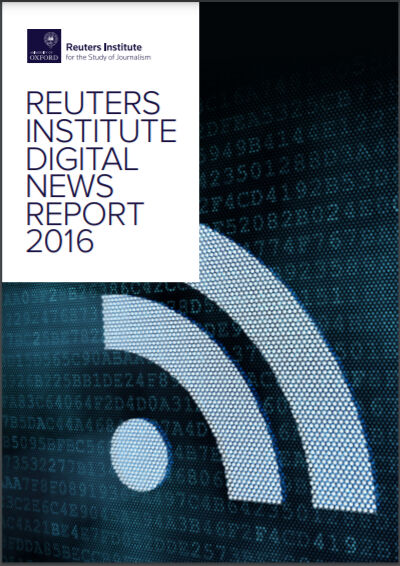
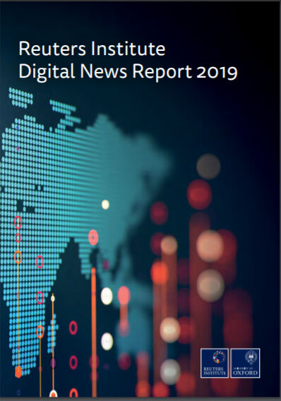
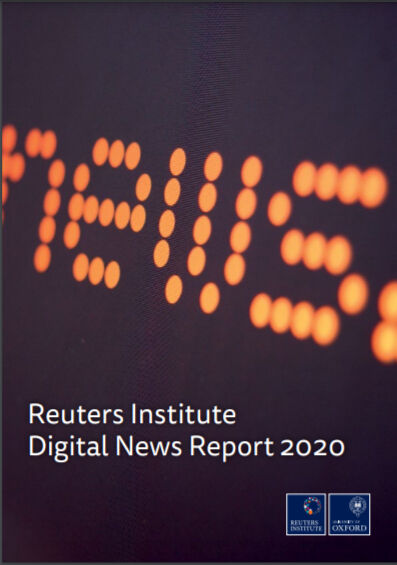

Trainees Edition
Trainers Edition
Trainees Edition
Trainers Edition
Module 7: Global News Consumption Trends
Module Description
The main purpose of this Module is to present an overview of the global news consumption trends in order to develop an understanding of the attitudes, habits and preferences of news audiences, their awareness of news related issues, the changing environment around news across countries, time, culture and demographic features.
The secondary aim is to guide trainers who want to use the content of this Module to train their trainees. Understanding news consumption trends also helps to choose the most effective means to combat mis/disinformation as well as to develop the most appropriate content (which addresses vulnerable points) for news literacy curricula.
With these aims in this module, preferred sources of news, preferred access points, trust in news media, channels of and concerns for misinformation, format preferences, impact of news literacy along with guidelines about how to teach the subject are covered.
Trainees who successfully complete this module will be able to:
- demonstrate an understanding of the global news consumption trends
- demonstrate an understanding of the attitudes, habits and preferences of news audiences
- demonstrate an understanding of news audiences’ awareness of and concerns about news related issues
- demonstrate an understanding of the changing environment around news across countries, time, culture and demographic features.
Additionally, trainers who successfully complete this module, will be able to demonstrate an understanding of the need for alteration in the teaching content according to the target groups’ features as well as the guidelines for training on the subject.
Module Structure
This Module consists of the following parts:
- Module Description (objectives, description of the content and learning outcomes)
- Module Structure
- Guidelines for Trainees
- Guidelines for Trainers (how to get prepared, methods to use and tips for trainers)
- Content (study materials)
- Quiz
- Resources (references and recommended sources and videos)
Main objectives of the module, description of the content and the learning outcomes are explained in the Module Description part. Content includes all study materials. Quiz includes multiple choice or true/false questions for trainees to test their progress. Resources have two components: references and recommended resources for further study. References is the list of resources cited in the content part. Recommended sources consist of a list of supplemental sources and videos which are highly recommended to read and watch for learning more on the topic. Guidelines for Trainees includes instructions and suggestions for trainees. Guidelines for Trainers leads trainers through different phases of the training and provides tips which could be useful while teaching the subject.
Guidelines for Trainees
Trainees are expected to read the text, watch recommended videos. They can consult suggested sources for further information. After completing the study of the content trainees are strongly suggested to take the quiz to evaluate their progress. They can revise the study material when and if needed.
Guidelines for Trainers
Guidelines for trainers includes suggestions and tips for trainers about how to use the content of this Module to train people on the global news consumption trends and the changing environment around news across countries, time, culture and demographic features.
Getting Prepared
Preparing a presentation (PowerPoint/Prezi/Canva) which is enriched with graphs and factual information (evidence) is strongly suggested. Presenting country specific data along with global data is also suggested.
This part of the content requires frequent updates. So, get the latest annual report of Reuters and make additions and changes as necessary. If your country is included in the Reuters’ survey, include country specific details in your presentations. If your country is not included within the Reuters’ sample, try to get research findings from other sources.
Getting Started
A short quiz (3 to 5 questions) in Kahoot or questions with Mentimeter can be used at the beginning for engaging participants in the topic. It can be used as a motivation tool as well as a tool to check trainees’ existing knowledge and awareness about the subject.
Methods to Use
Various teaching methods can be used in combination during the training. Such as:
- Lecturing
- Discussion
- Group work
- Self reflection
Tips for Trainers
Warming-up
An effective way of involving participants and setting common expectations about what they will learn is to ask a few preliminary questions on the subject. For instance you can ask trainees what are the changes in their news behaviour during the last decade.
After the discussions, making sure that trainees are able to understand that the news environment is changing across countries, time, culture and demographic features.
Presenting the Objective of the Lesson
The objective of the lesson should be made clear (which is to develop an understanding of the attitudes, habits, concerns, awareness and preferences of news audiences, and the changing environment around news across countries, time, culture and demographic features. Following the warming-up questions it will be easier to clarify the objectives.
Presenting the Lesson Content
While presenting the content make sure to interact with the trainees and encourage them for active participation.
- Before providing an overview of the global trends in news consumption, ask participants to elaborate on it.
- Before providing an overview of the changing environment around news across countries, time, culture and demographic features ask participants to elaborate on it.
- When demonstrating global figures, provide also country specific figures and make comparisons.
- After completing a comprehensive overview of the global trends in the news landscape, ask participants how important this knowledge is for curriculum development for news literacy.
Concluding
Make a short summary of the lesson and ask a couple of questions which underline the most important messages you planned to give.
- Ask trainees whether being aware of the changes in news landscape raise their awareness towards news related issues
After the discussions make sure that trainees understand that there are numerous changes and factors (time, countries and demographic features) which affect news consumption behaviour of individuals and this is valuable information for a targeted training.
Content: Global News Consumption Trends
Introduction
Knowledge on the attitudes, habits and behaviour of news audiences is important to understand the changing news landscape, country and demographic features (such as age) based differences. This understanding helps to choose the most effective means to combat mis/disinformation as well as to develop the most appropriate content (which addresses vulnerable points) for news literacy curricula.
The Reuters Institute for the Study of Journalism at University of Oxford has been publishing annual reports on how news is being consumed in a range of countries since 2012. These reports are prepared based on the surveys of thousands of individuals in dozens of countries from different continents (e.g. about 50,000 people from 26 countries in 2016, more than 74,000 people in 37 countries in 2018, more than 80,000 people in 40 countries in 2020).
It is the most comprehensive ongoing comparative study of news consumption in the world. Europe remains a key focus, but countries from Asia, Latin America, Africa and North America are also covered in Reuters’ reports. Main findings of the last five years’ reports are summarised here.
Much of the data in the 2020 report was collected before the Covid-19 virus hit many of the countries covered in the survey, so to a large extent 2020 report represents a snapshot of the trends before pandemic. However, to get a sense of what has changed, key parts of the survey were repeated in six countries (UK, USA, Germany, Spain, South Korea, and Argentina) in early April 2020 (after pandemic outbreak). After pandemic findings will be addressed separately when necessary.
Sources of News
Between 2012-2017, a consistent pattern is seen, in most countries regarding the sources people use for news, with television news (about 70% in 2016) and online news (about %75 in 2016) the most frequently accessed, while readership of printed newspapers has declined significantly (from about 40% to 25% in 2016). The biggest change has been the growth of news accessed via social media sites like Facebook, Twitter and Instagram (Newman, Fletcher, Kalogeropoulos, Levy & Nielsen, 2016, p. 8; 2017, p. 10). The percentage of people saying they use social media as a source of news has risen to 46% in the US (almost doubled from 2013 to 2016) and in Europe some differences have been observed among countries (the UK 35% and Germany 31%, for instance). Across the entire sample from 26 countries, in 2016, at least one in ten (12%) say social media are their main source of news, with even higher figures in Australia (18%) and Greece (27%) (Newman, Fletcher, Kalogeropoulos, Levy & Nielsen, 2016, p. 7-8).

Data indicates significant generational splits in the sources used for news. Across all countries, younger groups are much more likely to use social media and digital media as their main source of news, while older groups cling to the habits they grew up with (TV, radio, and print; television news being the most important). A third of 18–24s (33%) say (in 2017) social media are their main source of news – that’s more than online news sites (31%) and more than TV news and printed newspapers put together (29%) (Newman, Fletcher, Kalogeropoulos, Levy & Nielsen, 2017, p. 7, 10).
Television remains as a critical source of news for many in 2018 as well, while news apps, email newsletters, and mobile notifications continue to gain in importance (Newman, Fletcher, Kalogeropoulos, Levy & Nielsen, 2018, p. 9). The most recent evaluation of the last nine years’ Reuters data, on the other hand, has shown online news overtaking television as the most frequently used source of news in many of the countries covered in the survey. Printed newspapers have continued to decline while social media have levelled off after a sharp rise (Newman, Fletcher, Kalogeropoulos, Levy & Nielsen, 2020, p. 11).
The use of social media for news has started to fall in a number of countries after years of continuous growth. In 2018, in many countries, growth stopped or went into reverse. Taking the US as an example, weekly social media use for news grew steadily from 27% in 2013 to a peak of 51% in 2017 before falling back significantly in 2018 to 45% (-6). In the UK usage grew from 20% in 2013 to 41% in 2017 before falling back to 39% in 2018. The decline in Brazil appears to have started in 2016, however usage is still over 65% (Newman, Fletcher, Kalogeropoulos, Levy & Nielsen, 2018, p. 9-10).
In 2019, in many countries, people started to spend less time onFacebook and more time on WhatsApp and Instagram than previous years. However, Facebook still remains by far the most important social network for news. A rise is seen in the use of messaging apps for news as consumers look for more private spaces to communicate. WhatsApp has become a primary network for discussing and sharing news in non-Western countries like Brazil (53%) Malaysia (50%), and South Africa (49%). Public and private Facebook Groups discussing news and politics have become popular in Turkey (29%) and Brazil (22%) but are much less used in Western countries such as Canada (7%) or Australia (7%) (Newman, Fletcher, Kalogeropoulos, Levy & Nielsen, 2019, p. 9).
Source: Pixnio
There are mainly two factors driving the rapid growth of the use of messaging apps for news. The first one is that people’s Facebook networks have gotten so big over time that people no longer feel comfortable sharing content openly so they move discussion to messaging apps where they can be sure that they are talking to a close circle of friends. The second one is that encrypted messaging apps like WhatsApp have proved a relatively safe place for free expression (e.g. political views). This is an important factor especially in authoritarian countries like Turkey, Malaysia, and Hong Kong. Reuters’ survey findings indicate a strong correlation between use of networks like WhatsApp and self-expressed concern about the safety of posting political messages (Newman, Fletcher, Kalogeropoulos, Levy & Nielsen, 2018, p. 12-13).
Media habits changed significantly during the COVID-19 lockdowns. A smaller size survey conducted only in six countries before and after the pandemic had taken effect (in both January and April 2020) has shown that: More people turned to live broadcast television news (weekly TV news consumption rose by an average of five percentage points across all six countries) and to trusted news sources online. But social media were also substantially up (+5) as more people used these networks for finding and sharing news in combination with television and online sites. Additionally, the lockdowns also accelerated the use of new digital tools, with many people joining online groups or taking part in video conferencing for the first time (Newman, Fletcher, Kalogeropoulos, Levy & Nielsen, 2020, p. 10-13).
Preferred Access Points (Gateways and Intermediaries) to News
The vast majority of Reuter’s 2018 survey’s respondents (65%) prefer to get to news through a side door, rather than going directly to a news website or app. Over half (53%) prefer to access news through search engines, social media, or news aggregators, interfaces that use ranking algorithms to select stories, rather than interfaces driven by humans/editors (Newman, Fletcher, Kalogeropoulos, Levy & Nielsen, 2018, p. 13).
Behind the averages, however, very significant country differences were found. Two-thirds of respondents in Finland (65%) and Norway (62%) prefer to go directly to a website or app. On the other hand, preferred access is often via social media, with over four in ten in Chile (43%), Bulgaria (42%), and Malaysia (40%). In some Asian countries, aggregators or search engines are the main gateways. In South Korea, 47% say they prefer to access news via search, 30% via a news aggregator and only 5% prefer to go directly to a news website or an app. In Japan, where Yahoo! is the main news portal, the figure is just 15%. These differences in preferred access points are critical. They show that Nordic publishers still have direct relationships with their readers. Korean and Japanese publishers, on the other hand, find themselves much more dependent on third-party platforms to access audiences (Newman, Fletcher, Kalogeropoulos, Levy & Nielsen, 2018, p. 14).
Source: Wikimedia Commons
In terms of access points for online news, habits continue to become more distributed in 2020 – as more and more people embrace various digital platforms that were initially used most intensely by younger people. Across all countries, just over a quarter (28%) prefer to start their news journeys with a website or app, followed by social media (26%). Those aged 18–24 (so-called Generation Z) have an even weaker direct connection with news brands (16%) and are almost twice as likely to prefer to access news via social media (38%). Across age groups, use of Instagram for news has doubled since 2018 (Newman, Fletcher, Kalogeropoulos, Levy & Nielsen, 2020, p. 23).
As findings indicate, more people are discovering news through algorithms than through editors. More than half of the survey participants (54%), in 2017, prefer paths that use algorithms to select stories rather than editors or journalists (44%). This effect is even more apparent for those who mainly use smartphones (58%) and for younger users (64%) (Newman, Fletcher, Kalogeropoulos, Levy & Nielsen, 2017, p. 23).
On one hand, many people are turning to social networks and news aggregators for online news. Aggregators are preferred because of both speed of update and convenience in bringing multiple sources into one place, while social networks are preferred for interactivity. On the other hand, respondents everywhere are expressing some concerns about the possible negative impact of algorithms, with Norwegians and British amongst those who most fear that key information or challenging viewpoints might be lost in an algorithmically-driven filter bubble (Newman, Fletcher, Kalogeropoulos, Levy & Nielsen, 2016, p. 11-12).
News Avoidance and News Overload
Polarisation, mis/disinformation, and low trust are not the only issues the news industry is facing today. There is also news avoidance and news overload problems. Reuters’ data from the 2019 survey reveals that almost a third (32%) of participants actively avoid the news. Compared to 2017 data, avoidance is up 3 percentage points overall and 11 points in the UK, driven by boredom, anger, or sadness over Brexit. People say they avoid the news because it has a negative effect on their mood (58%) or because they feel powerless to change events or it is because they can’t rely on the news to be true. News avoidance is highest in Croatia (56%), Turkey (55%), and Greece (54%). It is lowest in Japan (11%) where reading the news is often seen as a duty (Newman, Fletcher, Kalogeropoulos, Levy & Nielsen, 2019, p. 10, 26; 2017, p. 9).
Similarly, about one-third of participants (28%) agree that there is too much news these days and constant news updates and different perspectives make it hard to know what is really going on. A common complaint is that users are bombarded with multiple versions of the same story or of the same alert. There is too much conflicting and confusing news. Perception of overload is highest in the US (40%). It is lower in countries with a smaller number of publishers like Denmark (20%) and the Czech Republic (16%) (Newman, Fletcher, Kalogeropoulos, Levy & Nielsen, 2019, p. 26).
The evidence that some people are avoiding the news or are worn out by the amount of news give rise to new initiatives such as slow news and constructive journalism as well as explanatory journalism (Newman, Fletcher, Kalogeropoulos, Levy & Nielsen, 2019, p. 27).
Sharing of News
Social networks encourage not only discovery, but also discussing and sharing the news. Around a quarter of internet news users (24%) share news via social media during the average week; these are people who are closely interested in subjects like politics, business, technology, or the environment (Newman, Fletcher, Kalogeropoulos, Levy & Nielsen, 2016, p. 10).
Most people share predominantly news of which they approve (Finland, Australia, and the US) which in turn may be affecting the amount of positive news stories that people get exposed to. By contrast, sharers in the UK tend to be more combative or cynical and are comparatively more likely to share things they don’t like (Newman, Fletcher, Kalogeropoulos, Levy & Nielsen, 2016, p. 10).
Preferences for Objective News vs Partial News
Reuters’ 2020 survey shows that the majority (60%) prefer news that has no particular point of view and that only a minority (28%) prefer news that shares or reinforces their views. This is not surprising given that traditional expectations are that journalists should produce neutral and detached news, but the differences between countries are striking. The preference for neutral news is strongest in Germany, Japan, the UK, and Denmark – all countries with strong and independent public broadcasters. A preference for more partial news is strongest in Spain, France, and Italy as well in the US (Newman, Fletcher, Kalogeropoulos, Levy & Nielsen, 2020, p. 15).
In the US, where both politics and the media have become increasingly partisan over the years, Reuters researchers do find an increase (up six percentage points from 2013 to 2020) in the proportion of people who say they prefer news that shares their point of view. On the contrary, over time in the UK the proportion that prefers news that shares their point of view has declined six percentage points. Survey data also show that, across countries, young people are also less likely to favour news with no point of view (Newman, Fletcher, Kalogeropoulos, Levy & Nielsen, 2020, p. 16-17).
In reality most people like to mix news that they can trust with a range of opinions that challenge or support their existing views. Reuters’ 2020 survey reveals, however, that those with extreme political views are significantly less attracted to objective news (Newman, Fletcher, Kalogeropoulos, Levy & Nielsen, 2020, p. 17).
Trust in the News Media
Across all countries, fewer than half of the Reuters’ 2018 survey participants (44%) say they trust the media most of the time but they are more likely to trust media they themselves use most of the time (51%). By contrast, only a third of the sample says they trust the news they find in search engines (34%) most of the time, while news in social media is seen as even more unreliable (23%). Looking at more detailed data, from 2018, regarding general news trust, more movement and significant variations across countries are seen. Finland is holding steady at the top (62%) along with Portugal (62%). Greece (26%) and South Korea (25%) remain anchored at the bottom, though their scores have each increased by 2 percentage points. Trust in the news is substantially up in a number of countries, notably Ireland, Canada, the Netherlands, and Slovakia. Declining trust often seems to be linked to political tension. Trust is down 7 points in Spain (44%) after the Catalan referendum. It is also down in Austria (-4) following a divisive series of elections and in Poland (-5) where the government has been accused of cracking down on private media in the name of combating ‘fake news’ (Newman, Fletcher, Kalogeropoulos, Levy & Nielsen, 2018, p. 16).
Reuters’ survey also reveals the most and least trusted brands in 37 countries. Findings indicate that brands with a broadcasting background and long heritage tend to be trusted most and digital-born brands trusted least (Newman, Fletcher, Kalogeropoulos, Levy & Nielsen, 2018, p. 9).
In 2019, across all countries, the average level of trust in the news in general is down 2 percentage points to 42% and less than half (49%) agree that they trust the news media they themselves use. Trust levels in France have fallen to 24% (-11) following the media coverage of the Yellow Vests movement. Trust in the news found via search (33%) and social media remains stable but extremely low (23%) (Newman, Fletcher, Kalogeropoulos, Levy & Nielsen, 2019, p. 9).
Trust in the news media seems to continue to fall globally in 2020, as well. In Reuters’ 2020 poll across countries, less than four in ten (38%) said they trust most news most of the time – a fall of four percentage points from 2019. Less than half (46%) said they trust the news they use themselves (Newman, Fletcher, Kalogeropoulos, Levy & Nielsen, 2020, p. 9). Considerable country differences are seen, ranging from Finland and Portugal where over half (56%) say they trust most news most of the time, to less than a quarter in Taiwan (24%), France (23%), and South Korea (21%). Just six countries in 2020 have trust levels of more than 50%. Notable changes over the last 12 months include falls in Hong Kong (-16), Chile (-15), UK (-12), Mexico (-11), Denmark (-11), Bulgaria (-7), Canada (-8), and Australia (-6) where Reuters’ poll coincided with bitter debates over the handling of some of Australia’s worst-ever bush fires. Consequently, divided societies seem to trust the media less, not necessarily because the journalism is worse but because people are generally dissatisfied with institutions in their countries and perhaps because news outlets carry more views that people disagree with (Newman, Fletcher, Kalogeropoulos, Levy & Nielsen, 2020, p. 14).
In terms of trust for information about coronavirus, national news organisations score relatively well, behind doctors and health organisations but ahead of individual politicians and ordinary people. At around the peak of the lockdowns, trust in news organisations around COVID-19 was running at more than twice that for social media, video sites, and messaging applications where around four in ten see information as untrustworthy (Newman, Fletcher, Kalogeropoulos, Levy & Nielsen, 2020, p. 12).
Concerns About Misinformation and Disinformation
More than half of Reuter’s 2018 global survey sample (54%) expresses concern or strong concern about ‘what is real or fake’, when thinking about online news. There are significant country variations, with Brazil (85%), Spain (69%), France (62%), and the US (64%) at the top end. These are all polarised countries where recent or ongoing election or referendum campaigns have been affected by disinformation and misinformation. By contrast, there is much less concern in Germany (37%) and the Netherlands (30%) where politics tends to be less polarised and social media play a less important role as a source of news (Newman, Fletcher, Kalogeropoulos, Levy & Nielsen, 2018, p. 18).
Global concerns about mis/disinformation remain high in 2019 and 2020. Even before the coronavirus crisis hit, in 2020 more than half of Reuters’ global sample (56%) said they were concerned about the trustworthiness of the news. Concern tends to be highest in Brazil (84%), Kenya (76%), and South Africa (72%) where social media use is high and traditional institutions are often weaker. Lowest levels of concern are in the Netherlands, Germany, and Denmark. The biggest increase in concern came in Hong Kong in 2020 (+6) as the conflict between the government and student protesters continued and also in Finland (+4), where higher than average concern was seen over false and misleading information from foreign governments (Newman, Fletcher, Kalogeropoulos, Levy & Nielsen, 2020, p. 17)
Channels of Misinformation
People see social media as the biggest source of concern about misinformation (40%), well ahead of news sites (20%), messaging apps like WhatsApp (14%), and search engines such as Google (10%) (Newman, Fletcher, Kalogeropoulos, Levy & Nielsen, 2020, p. 19)
Breaking the data down further, across all countries 29% say they are most concerned about Facebook, followed by YouTube (6%) and Twitter (5%). But in Brazil, people say they are more concerned about closed messaging apps like WhatsApp (35%). The same is true in Chile, Mexico, Malaysia, and Singapore. This is a particular worry because false information tends to be less visible and can be harder to counter in these private and encrypted networks. By contrast, in the Philippines (47%) and the US (35%) the overwhelming concern is about Facebook, with other networks playing a minor role. Twitter is seen to be the biggest problem in Japan and YouTube in South Korea. Facebook is used much less widely in both of these countries. Given these concerns, a number of platforms including Facebook, Twitter, and YouTube have taken down misinformation that breached guidelines (Newman, Fletcher, Kalogeropoulos, Levy & Nielsen, 2020, p. 19-20).
The coronavirus crisis has reminded people that these networks can be used to spread all kinds of damaging misinformation, not just about politics. In Reuters’ after corona survey in a limited number of countries, almost four in ten (37%) said they had come across a great deal of misinformation about COVID-19 in social media like Facebook and Twitter, and 32% via messaging apps like WhatsApp (Newman, Fletcher, Kalogeropoulos, Levy & Nielsen, 2020, p. 19).
Responsibility for Regulation of Content
Most respondents believe that publishers (media companies and journalists - 75%) and platforms (like Google and Facebook - 71%) have the biggest responsibility to fix problems of fake and unreliable news. This is because much of the news they complain about relates to biased or inaccurate news from the mainstream media rather than news that is completely made up or distributed by other channels (Newman, Fletcher, Kalogeropoulos, Levy & Nielsen, 2018, p. 9, 19).
But there is a much more mixed picture when it comes to government intervention. There is some public appetite for government intervention to stop ‘fake news’, especially in Europe (60%) and Asia (63%). By contrast, only four in ten Americans (41%) thought that the government should do more (Newman, Fletcher, Kalogeropoulos, Levy & Nielsen, 2018, p. 9).
Evaluations of the News Media
In 2019 survey of Reuters, respondents were asked to evaluate the performance of news media in five areas: whether they think the news media focuses on the right topics, helps to understand current events, keeps people up to date, uses the right positive/negative tone, and does a good job of monitoring and scrutinising the powerful (Newman, Fletcher, Kalogeropoulos, Levy & Nielsen, 2019, p. 26).
Data reveals that the news media are seen as doing a better job at breaking news than explaining it. Across countries, almost two-thirds feel the media are good at keeping people up to date (62%), but are less good at helping them understand the news (51%). Less than half (42%) think the media does good in its watchdog role in other words in holding rich and powerful people to account. There are interesting country differences in terms of these attributes. News organisations in Northern European countries like Finland (51%) and Norway (51%) tend to have the best reputation for holding the rich and powerful to account. By contrast, media in nations such as South Korea (21%), Hungary (20%) and Japan (17%) are seen to be doing a poor job in this regard (Newman, Fletcher, Kalogeropoulos, Levy & Nielsen, 2019, p. 26).
Looking at the two other dimensions in the survey, only a minority (25%) feel that the topics selected are not relevant to their lives. There seems to be more of a problem with the tone taken by the news media to those stories. Four in ten (39%) think that the news media take a too negative view of events (Newman, Fletcher, Kalogeropoulos, Levy & Nielsen, 2019, p. 27).
Paying for Online News and Rise in Donations: A New Business Model
Although online platforms have enabled many publishers to reach more people than ever before, the business models around the digital environment remain extremely challenging. Traditional media companies are laying off staff in the light of sharp declines in print revenue and continuing problems in monetising audiences online. Whilst around 45% of the total survey sample pay for a printed newspaper at least once a week, it has been much harder to persuade readers to pay for news online (Newman, Fletcher, Kalogeropoulos, Levy & Nielsen, 2016, p. 22-23).
Hardest hits have been publishers who depend on digital advertising revenue, which has weakened due to (a) the move to smaller mobile screens (b) the market power of Facebook and Google and (c) the rise of ad-blocking. According to Reuters’ 2016 data, ad-blocking is running at between 10% (Japan) and 38% (Poland), but much higher amongst under-35s. Around a third of the survey sample say they plan to install an ad-blocker on their smartphones in the next year. There is not one single reason for ad-blocking. Mostly it reflects unhappiness with the volume and distracting nature of advertising but there are strong privacy concerns in the Netherlands and Spain (Newman, Fletcher, Kalogeropoulos, Levy & Nielsen, 2016, p. 22).
With existing models of online advertising increasingly broken, publishers have renewed their focus on alternative forms such as branded and sponsored content. Sponsored content and its labelling is still an emerging area with much room for confusion. By looking at six countries where the practice is most prevalent, it is found that consumers are most comfortable in Canada and the US and most resistant in Germany and Korea, where only a fifth (21%) agreed that the labelling was sufficiently clear and a third (32%) disagreed (Newman, Fletcher, Kalogeropoulos, Levy & Nielsen, 2016, p. 22).
While the digital advertising revenue is at stake and not enough on its own to support high quality journalism, across the industry there is a push to persuade consumers to pay directly for online news through subscription, membership, donations or per-article payments. The average number of people paying for online news edged up in 2018 in many countries, with significant increases coming from Norway (+4 percentage points), Sweden (+6), and Finland (+4). All these countries have a small number of publishers, the majority of whom are relentlessly pursuing a variety of paywall strategies. They have the added benefit of coming from wealthy societies that value news, have a strong subscription tradition, and where language and the small size of their market protects them from foreign competition. But in more complex and fragmented countries, there are still many publishers who offer online news for free (Newman, Fletcher, Kalogeropoulos, Levy & Nielsen, 2018, p. 22, 9).
The rise of subscription has raised concerns about a two-tier system, where high-quality news is reserved for those who can afford it. This is why some news organisations prefer to keep access free but to ask for voluntary contributions. Findings indicate that relatively small numbers currently donate to news organisations – just 1% in the UK and Germany, rising to 2% in Spain and 3% in the US. But the scale of the opportunity could be much bigger. On average a quarter of the Reuter’s 2018 sample (22%) say they might be prepared to donate to a news organisation in the future if they felt they could not cover their costs in other ways. In qualitative responses, donations seem to strike a chord with those who are worried about ‘fake news’ and the independence of the media (Newman, Fletcher, Kalogeropoulos, Levy & Nielsen, 2018, p. 23-25).
In 2019, despite the efforts of the news industry, only a small increase in the numbers paying for online news, whether by subscription, membership, or donation, are seen. Growth is limited to a handful of countries mainly in the Nordic region (Norway 34%, Sweden 27%) while the number paying in the US (16%) remains stable after a big jump in 2017. Even in countries with higher levels of payment, the vast majority only have one online subscription. One encouraging development though is that most payments are now ‘ongoing’, rather than one-offs. In some countries, subscription fatigue may also be setting in, with the majority preferring to spend their limited budget on entertainment (Netflix/Spotify) rather than news (Newman, Fletcher, Kalogeropoulos, Levy & Nielsen, 2019, p. 9).
In 2020, significant increases were seen in payment for online news in a number of countries including the US 20% (+4) and Norway 42% (+8), with smaller rises in a range of other countries. It is important to note that across all countries most people are still not paying for online news. Overall, the most important factor for those who subscribe is the distinctiveness and quality of the content. Subscribers believe they are getting better information. However, a large number of people are perfectly content with the news they can access for free and there is a very high proportion of non-subscribers (40% in the US and 50% in the UK) who say that nothing could persuade them to pay (Newman, Fletcher, Kalogeropoulos, Levy & Nielsen, 2020, p. 9).

Impact of News and Media Literacy
For the first time in 2018 Reuters researchers measured news literacy and identified different levels of news literacy within their online sample. Those with higher levels of news literacy tend to prefer newspaper brands over TV, and use social media for news very differently from the wider population. They are also more cautious about interventions by governments to deal with misinformation (Newman, Fletcher, Kalogeropoulos, Levy & Nielsen, 2018, p. 9).
There is also a clear link between knowledge about how the news industry works and likelihood to pay for news in the future. Findings of Reuters’ 2018 survey reveal that more than two-thirds of respondents (68%) are either unaware of the problems of the news industry or believe that most news organisations are making a profit from digital news. In reality, most digital news sites are operating at a loss, subsidised by investors, alternative revenue streams, or historic profits from broadcast or print. Those that were aware that digital newspapers are making a loss (10% of the sample) are more likely to pay for a news subscription or give a donation (Newman, Fletcher, Kalogeropoulos, Levy & Nielsen, 2018, p. 24).
One of the impacts of news/media literacy was a change of habits in news use. One positive finding of Reuters’ 2019 survey is that over a quarter (26%) have started relying on ‘more reputable’ sources of news – rising to 36% in Brazil and 40% in the US. A further quarter (24%) said they’d stopped using sources that had a ‘less accurate reputation’, with almost a third (29%) deciding not to share a potentially inaccurate news article. Behaviour seems to have changed most in countries where concern about misinformation is highest. Almost two-thirds (61%) in Brazil said they had decided not to share a potentially inaccurate story in social media and 40% in Taiwan after recent elections marked by misinformation (Newman, Fletcher, Kalogeropoulos, Levy & Nielsen, 2019, p. 22).
Format Preference for News (Text, Podcast, Video)
Reuters has been tracking content type preferences since 2014. Findings in 2018 indicate an overwhelming preference towards reading rather than watching. The US has pushed furthest towards video with 12% saying they mostly consume news in video (+2), but even there 62% say they mostly prefer to consume in text. This figure rises to 86% in Finland. There have been some changes over time (especially in the US and Spain), but these have been modest given the increase in exposure to video through social media. Findings reveal a split between different countries and cultures. All Asian countries (including Japan) lean towards wanting more online news video, however still two-thirds of respondents in Asian countries say they mostly prefer text. In the US and Northern European countries there is a strong vote for fewer online videos. Age does not seem to be a significant factor (Newman, Fletcher, Kalogeropoulos, Levy & Nielsen, 2018, p. 28).
Looking at consumption of video news, interesting regional differences are seen in 2020. Nine in ten of the online population say they access video news online weekly in Kenya (93%), the Philippines (89%), and Hong Kong (89%), but only around half this proportion do in Northern European countries such as Germany (43%), Denmark (41%), and the UK (39%). Across countries over half (52%) access video news via a third-party platform each week, such as YouTube, Facebook, and Twitter, with a third (33%) accessing via news websites and apps. But again, there are very significant differences among countries. In Hong Kong three-quarters (76%) access video news via third-party platforms but this figure is less than a quarter (23%) in the UK (Newman, Fletcher, Kalogeropoulos, Levy & Nielsen, 2020, p. 28).
Podcasts are also becoming popular across the world due to better content and easier distribution. New audio devices are making discovery easier, while advertising and sponsorship opportunities are growing. Young people are far more likely to use podcasts than listen to speech radio. Overall, a third of the entire survey sample in 2018 (34%) listens to a podcast at least monthly but there are significant country differences. Podcasts are twice as popular in Ireland (38%) as they are in the UK (18%). One theory is that podcasts tend to perform best in countries like the US (33%) and Australia (33%) where people spend a lot of time in their cars. The lower levels of usage in the Netherlands (18%) may relate to shorter commuting distances and more bike travel. But this can’t be the full explanation. Loyalty to radio, levels of supply, and the amount of promotion are also important factors. Proportionally under 35s listen to twice as many podcasts as over 45s. This is not surprising given that this is a generation that has embraced both smartphones and on-demand services such as Netflix and Spotify. Older groups, by contrast, remain more likely to listen to radio (Newman, Fletcher, Kalogeropoulos, Levy & Nielsen, 2018, p. 10, 29).
The proportion using podcasts has grown significantly in 2020, though coronavirus lockdowns may have temporarily reversed this trend. Across countries, half of all respondents (50%) say that podcasts provide more depth and understanding than other types of media. About half of podcast users listen to a news podcast in the US, where the market has developed furthest. Podcast users in the US say that the format gives greater depth and understanding of complex issues (59%) and a wider range of perspectives (57%) than other types of media. News podcasts are most popular with 25–34s (young millennials) (Newman, Fletcher, Kalogeropoulos, Levy & Nielsen, 2020, p. 9, 25-26).

The Use of Smartphones and New Devices for News
The importance of smartphones – and people’s dependence on them – shows no sign of slowing down. On average 62% of survey sample in 2018 say they use the smartphone for news weekly (+6), only just behind the laptop/computer at 64%. In most countries, smartphone reach for news has doubled in six years (Newman, Fletcher, Kalogeropoulos, Levy & Nielsen, 2018, p. 27).
The smartphone continues to grow in importance for news in 2019, with two-thirds (66%) using the device to access news weekly (+4). Mobile news aggregators like Apple News and Upday are becoming a more significant force. AppleNews in the US now reaches more iPhone users (27%) than the Washington Post (23%) (Newman, Fletcher, Kalogeropoulos, Levy & Nielsen, 2019, p. 10).
Dependence on smartphones continues to grow. In 2020, over two-thirds (69%) of people use the smartphone for news weekly and these devices are encouraging the growth of shorter video content via third-party platforms as well as audio content like podcasts. Those who use smartphones as a main device for news are significantly more likely to access news via social networks. Usage is often highest in parts of the Global South such as Kenya (83%) and South Africa (82%) where fixed-line internet tends to be less prevalent. Access is lowest in Canada (55%), Japan (52%), and in much of Eastern Europe, though even here the smartphone has become – or is on its way to becoming – the main platform for accessing news (Newman, Fletcher, Kalogeropoulos, Levy & Nielsen, 2020, p. 29).
Across countries almost half (48%) use two or more devices to access news each week compared with 39% in 2014. Computers and laptops remain important for many but the convenience and versatility of the smartphone continues to win out. In the UK the smartphone overtook the computer in 2017 and is now used by around two-thirds of the survey sample. Tablets are flat in terms of usage for news (26%) with a small group of older and wealthier users continuing to value their larger screens (Newman, Fletcher, Kalogeropoulos, Levy & Nielsen, 2020, p. 30).
These trends are important because shorter audience attention spans and smaller mobile screens are affecting the type of news content produced. Pictures and videos need to be reformatted using vertical aspect ratios and often annotated with text to work in a mobile context (Newman, Fletcher, Kalogeropoulos, Levy & Nielsen, 2018, p. 27).
Quiz
References
Newman, N., Fletcher, R., Kalogeropoulos, A., Levy, D.A.L. & Nielsen, R. K. (2016). Reuters Institute Digital News Report 2016. Reuters Institute for the Study of Journalism.
Newman, N., Fletcher, R., Kalogeropoulos, A., Levy, D.A.L. & Nielsen, R. K. (2017). Reuters Institute Digital News Report 2017. Reuters Institute for the Study of Journalism.
Newman, N., Fletcher, R., Kalogeropoulos, A., Levy, D.A.L. & Nielsen, R. K. (2018). Reuters Institute Digital News Report 2018. Reuters Institute for the Study of Journalism.
Newman, N., Fletcher, R., Kalogeropoulos, A., Levy, D.A.L. & Nielsen, R. K. (2019). Reuters Institute Digital News Report 2019. Reuters Institute for the Study of Journalism.
Newman, N., Fletcher, R., Kalogeropoulos, A., Levy, D.A.L. & Nielsen, R. K. (2020). Reuters Institute Digital News Report 2018. Reuters Institute for the Study of Journalism.
Recommended Sources
Newman, N., Fletcher, R., Kalogeropoulos, A., Levy, D.A.L. & Nielsen, R. K. (2016). Reuters Institute Digital News Report 2016. Reuters Institute for the Study of Journalism.
Newman, N., Fletcher, R., Kalogeropoulos, A., Levy, D.A.L. & Nielsen, R. K. (2017). Reuters Institute Digital News Report 2017. Reuters Institute for the Study of Journalism.
Newman, N., Fletcher, R., Kalogeropoulos, A., Levy, D.A.L. & Nielsen, R. K. (2018). Reuters Institute Digital News Report 2018. Reuters Institute for the Study of Journalism.
Newman, N., Fletcher, R., Kalogeropoulos, A., Levy, D.A.L. & Nielsen, R. K. (2019). Reuters Institute Digital News Report 2019. Reuters Institute for the Study of Journalism.
Newman, N., Fletcher, R., Kalogeropoulos, A., Levy, D.A.L. & Nielsen, R. K. (2020). Reuters Institute Digital News Report 2018. Reuters Institute for the Study of Journalism.
Recommended Videos
Reuters Institute for the Study of Journalism. (2021). Digital News Report 2021.
Reuters Institute for the Study of Journalism. (2020). Digital News Report 2020.
Reuters Institute for the Study of Journalism. (2019). Digital News Report 2019.
Reuters Institute for the Study of Journalism. (2018). Digital News Report 2018.
Reuters Institute for the Study of Journalism. (2017). Digital News Report 2017.
Reuters Institute for the Study of Journalism. (2016). Digital News Report 2016.